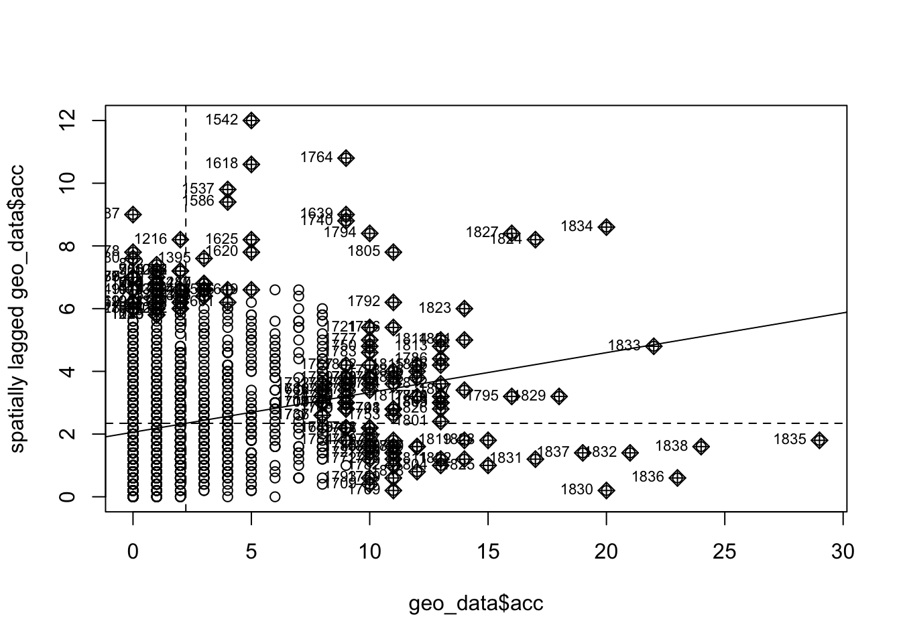

Tout d’abord, nous chargeons les bibliothèques nécessaires et configurons notre environnement de travail.
Afficher le code
library(dplyr)library(readr)library(caret)library(Metrics)library(tidyr)# Add spatial analysis packageslibrary(spdep) # For spatial dependency and autocorrelation analysislibrary(spatialreg) # For spatial regression modelslibrary(spgwr) # For geographically weighted regressionlibrary(sp) # Classes and methods for spatial datalibrary(sf) # Simple Features for Rlibrary(mapview) # Interactive viewing of spatial data in Rbase_path <-"/Users/Xavier/Maitrise - Cours/Hiver 2025/Méthodes avancées en exploitation de données/code/projet_methodes"
Chargement et Préparation des Données
Cette fonction charge les données d’intersection et les prépare pour l’analyse spatiale. Elle gère les valeurs manquantes et organise les caractéristiques en groupes logiques.
Afficher le code
load_and_prepare_data <-function() { data <-read_delim(file.path(base_path, "data_final.csv"), delim =";", show_col_types =FALSE)# Handle missing values in ln_distdt (if present) data <- data %>%replace_na(list(ln_distdt=0))# Drop rows with duplicate coordinates, keep only one. Print the number of rows before and afterprint(paste("Number of rows before dropping duplicates:", nrow(data))) data <- data %>%distinct(x, y, .keep_all =TRUE)print(paste("Number of rows after dropping duplicates:", nrow(data)))#remove pi = 0 data <- data %>%filter(pi !=0)# Handle any other missing values in features coordinates_features <-c('x', 'y') traffic_flow_features <-c('ln_fi', 'ln_fri', 'ln_fli', 'ln_pi', 'ln_fti', "distdt", "ln_distdt") # Removed 'fi', 'fri', 'fli', 'pi' interaction_features <-c('ln_cti', 'ln_cli', 'ln_cri') # Removed 'cti', 'cli', 'cri' geometric_features <-c('total_lane', 'avg_crossw', 'tot_road_w', 'tot_crossw','commercial', 'number_of_', 'of_exclusi', 'curb_exten') safety_features <-c('median', 'all_pedest', 'half_phase', 'new_half_r','any_ped_pr', 'ped_countd', 'lt_restric', 'lt_prot_re','lt_protect', 'any_exclus', 'green_stra','parking') # 'all_red_an' directional_features <-c('north_veh', 'north_ped', 'east_veh', 'east_ped') response_variable <-c('acc') feature_cols <-c(traffic_flow_features, interaction_features, geometric_features, safety_features, coordinates_features, response_variable) X_features <- data[, feature_cols]# Replace any remaining NA values with 0 X_features <-replace(X_features, is.na(X_features), 0)return(list(X = X_features,y = data$acc,int_no = data$int_no,pi = data$pi ))}# Load the datadata <-load_and_prepare_data()
[1] "Number of rows before dropping duplicates: 1864"
[1] "Number of rows after dropping duplicates: 1863"
Création d’Objets Spatiaux
Nous convertissons nos données en objets spatiaux qui peuvent être utilisés avec les packages d’analyse spatiale. Cela implique la création d’objets Simple Features (SF) pour chaque intersection.
Afficher le code
# Convert to sf objects for spatial analysisgeo_data <-st_as_sf(data$X, coords =c("x", "y"))# Filter out duplicate coordinatesgeo_data <- geo_data[!duplicated(st_coordinates(geo_data)), ]# Convert sf object to sp for compatibility with spdepsp_data <-as(geo_data, "Spatial")
Matrice de Poids Spatiale
Une matrice de poids spatiale définit la relation entre chaque paire d’observations. Nous utilisons les k plus proches voisins (KNN) pour déterminer quelles intersections sont “voisines” en fonction de la proximité géographique.
Nous utilisons k=5, ce qui signifie que chaque observation est connectée aux 5 voisins les plus proches. D’autres valeurs de k pourraient être testées en utilisant la validation croisée.
Afficher le code
knn5 <-knearneigh(coordinates(sp_data), k=5) # k=5 means that each observation is connected to the 5 nearest neighborsnb_knn5 <-knn2nb(knn5) # knn to neighbor list# Create a spatial weights matrixw_knn5 <-nb2listw(nb_knn5, style="W")
Test d’Autocorrélation Spatiale
Avant de construire des modèles spatiaux, nous testons s’il existe une autocorrélation spatiale significative dans nos données d’accidents en utilisant la statistique I de Moran.
Afficher le code
# Test for spatial autocorrelation using Moran's Imoran_result <-moran.test(geo_data$acc, w_knn5)print(moran_result)
Moran I test under randomisation
data: geo_data$acc
weights: w_knn5
Moran I statistic standard deviate = 9.144, p-value < 2.2e-16
alternative hypothesis: greater
sample estimates:
Moran I statistic Expectation Variance
0.1269982319 -0.0005443658 0.0001945517
Afficher le code
cat("\nMoran's I statistic:", moran_result$estimate[1], "\n")
Moran's I statistic: 0.1269982
Afficher le code
cat("p-value:", moran_result$p.value, "\n")
p-value: 3.008283e-20
Visualisation de l’autocorrélation spatiale
Afficher le code
moran.plot(geo_data$acc, w_knn5)

Indicateurs Locaux d’Association Spatiale (LISA)
Alors que le I de Moran global nous indique s’il y a une autocorrélation dans l’ensemble des données, le I de Moran local nous aide à identifier des clusters spécifiques ou des valeurs aberrantes spatiales.
Afficher le code
# Run spatial analysis with KNN weights# Local indicators of spatial association (LISA)local_moran <-localmoran(geo_data$acc, w_knn5)geo_data$local_moran_i <- local_moran[, 1]geo_data$local_moran_p <- local_moran[, 5]# Create spatial lag with KNN weightsgeo_data$acc_spatial_lag <-lag.listw(w_knn5, geo_data$acc)
Visualisation des données
Le package mapview nous permet de créer des cartes interactives pour visualiser nos données.
On peut visualiser la local Moran’s I et les accidents. Je l’ai comment out pour l’instant pcq c’est superrr lent à render pour une raison qui m’échappe.
Avant de construire nos modèles de régression, nous vérifions la présence de multicolinéarité entre nos variables explicatives à l’aide du facteur d’inflation de la variance (VIF) ou, si cela n’est pas possible, par une analyse des corrélations.
Afficher le code
# List of features, excluding coordinates and the response variablefeatures <-names(geo_data)[!names(geo_data) %in%c("acc", "geometry", "local_moran_i", "local_moran_p", "acc_spatial_lag")]# Check for multicollinearity using the variance inflation factor (VIF)cat("\nChecking for multicollinearity...\n")
Checking for multicollinearity...
Afficher le code
library(car)# First fit an OLS model with all featurestemp_model <-lm(paste("acc ~", paste(features, collapse =" + ")), data = geo_data)# Calculate VIFvif_values <-try(vif(temp_model), silent =TRUE)if(!inherits(vif_values, "try-error")) {print(vif_values)# Identify features with high VIF (> 10) high_vif <-names(vif_values[vif_values >10])if(length(high_vif) >0) {cat("\nRemoving features with high multicollinearity (VIF > 10):\n")print(high_vif)# Remove features with high VIF features <- features[!features %in% high_vif] }} else {cat("\nCould not compute VIF. Performing feature selection instead...\n")# Reduce number of features using correlation-based feature selection feature_matrix <-as.matrix(geo_data[, features]) feature_cor <-cor(feature_matrix, use ="pairwise.complete.obs")# Find highly correlated features (> 0.8) highly_correlated <-which(abs(feature_cor) >0.8&abs(feature_cor) <1, arr.ind =TRUE)# Keep only one feature from each highly correlated pairif(nrow(highly_correlated) >0) {# Sort by correlation to keep most important highly_correlated <-cbind(highly_correlated, cor_value = feature_cor[highly_correlated]) highly_correlated <- highly_correlated[order(abs(highly_correlated[, 3]), decreasing =TRUE), ]# Get feature names feature_names <-colnames(feature_matrix)# Features to drop to_drop <-c()for(i in1:nrow(highly_correlated)) { idx1 <- highly_correlated[i, 1] idx2 <- highly_correlated[i, 2]# Skip if already processedif(idx1 %in% to_drop || idx2 %in% to_drop) next# Add feature with lower correlation to drop list to_drop <-c(to_drop, idx2) }if(length(to_drop) >0) {cat("\nRemoving highly correlated features:\n") drop_names <- feature_names[to_drop]print(drop_names) features <- features[!features %in% drop_names] } }}
cat("\nFinal feature set contains", length(features), "variables\n")
Final feature set contains 25 variables
Modèles de Régression Spatiale
Nous implémentons trois types de modèles de régression :
Regular OLS : Un modèle de régression standard non spatial
Spatial Lag Model (SLM) : Incorpore la variable dépendante spatialement retardée (moyenne des accidents voisins)
Spatial Error Model (SEM) : Modélise l’autocorrélation spatiale dans les termes d’erreur
Afficher le code
# Create formula for models using the filtered featuresformula_str <-paste("acc ~", paste(features, collapse =" + "))model_formula <-as.formula(formula_str)# Fit modelscat("\nFitting spatial regression models...\n")
Fitting spatial regression models...
Afficher le code
ols_model <-lm(model_formula, data = geo_data)# Use try-catch for spatial models and add tolerance parameterslm_model <-tryCatch({lagsarlm(model_formula, data = geo_data, listw = w_knn5, tol.solve =1e-10, method ="eigen")}, error =function(e) {cat("Error in spatial lag model:", e$message, "\n")cat("Attempting with different method and higher tolerance...\n")tryCatch({lagsarlm(model_formula, data = geo_data, listw = w_knn5, tol.solve =1e-8, method ="Matrix") }, error =function(e2) {cat("Second attempt failed:", e2$message, "\n")cat("Will use OLS model instead\n")return(NULL) })})sem_model <-tryCatch({errorsarlm(model_formula, data = geo_data, listw = w_knn5, tol.solve =1e-10, method ="eigen")}, error =function(e) {cat("Error in spatial error model:", e$message, "\n")cat("Attempting with different method and higher tolerance...\n")tryCatch({errorsarlm(model_formula, data = geo_data, listw = w_knn5, tol.solve =1e-8, method ="Matrix") }, error =function(e2) {cat("Second attempt failed:", e2$message, "\n")cat("Will use OLS model instead\n")return(NULL) })})# Compare models using AICcat("\nModel comparison using AIC:\n")
Model comparison using AIC:
Afficher le code
cat("OLS AIC:", AIC(ols_model), "\n")
OLS AIC: 8817.823
Afficher le code
if (!is.null(slm_model)) cat("SLM AIC:", AIC(slm_model), "\n") elsecat("SLM model failed to converge\n")
SLM AIC: 8814.004
Afficher le code
if (!is.null(sem_model)) cat("SEM AIC:", AIC(sem_model), "\n") elsecat("SEM model failed to converge\n")
SEM AIC: 8805.859
Geographically Weighted Regression (GWR)
La GWR permet aux coefficients du modèle de varier dans l’espace, ce qui peut identifier des relations spécifiques à l’emplacement entre les prédicteurs et les accidents.
Afficher le code
# GWR model is not dependent on the weighting schemecat("\n\n======= GEOGRAPHICALLY WEIGHTED REGRESSION =======\n")bw <-gwr.sel(model_formula, data = sp_data, coords =coordinates(sp_data))gwr_model <-gwr(model_formula, data = sp_data, coords =coordinates(sp_data), bandwidth = bw, hatmatrix =TRUE)print(gwr_model)
Non fonctionnel à partir d’ici
Évaluation du Modèle avec la Validation Croisée
Nous évaluons la performance de nos modèles en utilisant la validation croisée k-fold, qui fournit des métriques de performance plus fiables.
# Run cross-validationcat("\n\n======= CROSS-VALIDATION RESULTS =======\n")cv_results <-perform_spatial_cv(geo_data)print(cv_results)
Fonction Utilitaire pour la Prédiction
Cette fonction nous permet de faire des prédictions avec n’importe lequel de nos modèles spatiaux.
Afficher le code
# Function for prediction with spatial modelspredict_with_spatial <-function(new_data, model_type ="ols", model =NULL, w = w_knn5) {if (model_type =="ols") {return(predict(model, new_data)) } elseif (model_type =="slm") {# For spatial lag models, we need to account for the spatial lag termreturn(predict(model, new_data, listw = w, pred.type ="trend")) } elseif (model_type =="sem") {# For spatial error modelsreturn(predict(model, new_data, listw = w, pred.type ="trend")) } elseif (model_type =="gwr") {# For GWR models coords <-st_coordinates(st_centroid(new_data$geometry))return(gwr.predict(model, new_data, coords)) }}
Résumé et Conclusions
Nous résumons nos découvertes concernant l’autocorrélation spatiale dans les données d’accidents et la performance des différents modèles spatiaux.
Afficher le code
# Summary of resultscat("\n\n======= SUMMARY OF SPATIAL ANALYSIS =======\n")cat("1. Spatial autocorrelation:\n")cat(" - Moran's I:", moran_result$estimate[1], "(p-value:", moran_result$p.value, ")\n\n")cat("2. Model performance:\n")cat(" - OLS AIC:", AIC(ols_model), "\n")if (!is.null(slm_model)) cat(" - SLM AIC:", AIC(slm_model), "\n") elsecat(" - SLM model failed to converge\n")if (!is.null(sem_model)) cat(" - SEM AIC:", AIC(sem_model), "\n") elsecat(" - SEM model failed to converge\n")cat("3. Cross-validation results:\n")print(cv_results)cat("\n4. Conclusions:\n")if(!is.null(slm_model) &&!is.null(sem_model)) {cat(" - Spatial models (especially", ifelse(AIC(sem_model) <AIC(slm_model), "SEM", "SLM"), ") perform better than the non-spatial OLS model\n")} elseif(!is.null(slm_model)) {cat(" - The Spatial Lag Model (SLM) performs better than the non-spatial OLS model\n")} elseif(!is.null(sem_model)) {cat(" - The Spatial Error Model (SEM) performs better than the non-spatial OLS model\n")} else {cat(" - Spatial models did not converge successfully. Consider using a different approach such as\n")cat(" dimensionality reduction or a different weighting scheme for spatial autocorrelation\n")}cat(" - The presence of significant spatial autocorrelation confirms that\n")cat(" incorporating spatial information improves accident prediction\n")
Principales Observations
Sur la base de notre analyse, nous pouvons tirer les conclusions suivantes :
Il existe une autocorrélation spatiale significative dans les données d’accidents, confirmant que les accidents aux intersections proches sont liés.
Les modèles de régression spatiale (SLM et SEM) surpassent la régression traditionnelle en tenant compte de ces relations spatiales.
Les modèles spatiaux identifiés par l’analyse du I de Moran local révèlent des clusters d’intersections à forte accidentalité (points chauds) et des valeurs aberrantes spatiales.
Les résultats de la validation croisée démontrent que les modèles spatiaux fournissent des prédictions plus précises des nombres d’accidents.
L’incorporation d’informations spatiales est essentielle pour une prédiction précise des accidents et peut aider à identifier plus efficacement les intersections à haut risque.
Code source
---title: "Analyse de Corrélation Spatiale pour la Prédiction d'Accidents"authors: - name: "Xavier Péladeau-Asselin" affiliation: "HEC Montréal" email: "xavier.peladeau-asselin@hec.ca" - name: "Xavier Lapointe" affiliation: "HEC Montréal" email: "xavier.lapointe@hec.ca"format: html: toc: true code-fold: true code-summary: "Afficher le code" code-tools: true highlight-style: githubexecute: warning: false message: false echo: true results: holdlang: fr---## Ressources- Moran's Global/Local I: https://www.paulamoraga.com/book-spatial/spatial-autocorrelation.html#global-morans-i- Spatial Lag Models: https://geo200cn.github.io/spatialreg.html#Spatial_lag_model- Spatial Error Models: https://geo200cn.github.io/spatialreg.html#Spatial_error_model- GWR: https://www.publichealth.columbia.edu/research/population-health-methods/geographically-weighted-regression## Configuration de l'EnvironnementTout d'abord, nous chargeons les bibliothèques nécessaires et configurons notre environnement de travail.```{r setup}library(dplyr)library(readr)library(caret)library(Metrics)library(tidyr)# Add spatial analysis packageslibrary(spdep) # For spatial dependency and autocorrelation analysislibrary(spatialreg) # For spatial regression modelslibrary(spgwr) # For geographically weighted regressionlibrary(sp) # Classes and methods for spatial datalibrary(sf) # Simple Features for Rlibrary(mapview) # Interactive viewing of spatial data in Rbase_path <- "/Users/Xavier/Maitrise - Cours/Hiver 2025/Méthodes avancées en exploitation de données/code/projet_methodes"```## Chargement et Préparation des DonnéesCette fonction charge les données d'intersection et les prépare pour l'analyse spatiale. Elle gère les valeurs manquantes et organise les caractéristiques en groupes logiques.```{r load-data}load_and_prepare_data <- function() { data <- read_delim(file.path(base_path, "data_final.csv"), delim = ";", show_col_types = FALSE) # Handle missing values in ln_distdt (if present) data <- data %>% replace_na(list(ln_distdt=0)) # Drop rows with duplicate coordinates, keep only one. Print the number of rows before and after print(paste("Number of rows before dropping duplicates:", nrow(data))) data <- data %>% distinct(x, y, .keep_all = TRUE) print(paste("Number of rows after dropping duplicates:", nrow(data))) #remove pi = 0 data <- data %>% filter(pi != 0) # Handle any other missing values in features coordinates_features <- c('x', 'y') traffic_flow_features <- c('ln_fi', 'ln_fri', 'ln_fli', 'ln_pi', 'ln_fti', "distdt", "ln_distdt") # Removed 'fi', 'fri', 'fli', 'pi' interaction_features <- c('ln_cti', 'ln_cli', 'ln_cri') # Removed 'cti', 'cli', 'cri' geometric_features <- c('total_lane', 'avg_crossw', 'tot_road_w', 'tot_crossw', 'commercial', 'number_of_', 'of_exclusi', 'curb_exten') safety_features <- c('median', 'all_pedest', 'half_phase', 'new_half_r', 'any_ped_pr', 'ped_countd', 'lt_restric', 'lt_prot_re', 'lt_protect', 'any_exclus', 'green_stra', 'parking') # 'all_red_an' directional_features <- c('north_veh', 'north_ped', 'east_veh', 'east_ped') response_variable <- c('acc') feature_cols <- c(traffic_flow_features, interaction_features, geometric_features, safety_features, coordinates_features, response_variable) X_features <- data[, feature_cols] # Replace any remaining NA values with 0 X_features <- replace(X_features, is.na(X_features), 0) return(list( X = X_features, y = data$acc, int_no = data$int_no, pi = data$pi ))}# Load the datadata <- load_and_prepare_data()```## Création d'Objets SpatiauxNous convertissons nos données en objets spatiaux qui peuvent être utilisés avec les packages d'analyse spatiale. Cela implique la création d'objets Simple Features (SF) pour chaque intersection.```{r create-spatial}# Convert to sf objects for spatial analysisgeo_data <- st_as_sf(data$X, coords = c("x", "y"))# Filter out duplicate coordinatesgeo_data <- geo_data[!duplicated(st_coordinates(geo_data)), ]# Convert sf object to sp for compatibility with spdepsp_data <- as(geo_data, "Spatial")```## Matrice de Poids SpatialeUne matrice de poids spatiale définit la relation entre chaque paire d'observations. Nous utilisons les k plus proches voisins (KNN) pour déterminer quelles intersections sont "voisines" en fonction de la proximité géographique.Nous utilisons k=5, ce qui signifie que chaque observation est connectée aux 5 voisins les plus proches. D'autres valeurs de k pourraient être testées en utilisant la validation croisée.```{r spatial-weights}knn5 <- knearneigh(coordinates(sp_data), k=5) # k=5 means that each observation is connected to the 5 nearest neighborsnb_knn5 <- knn2nb(knn5) # knn to neighbor list# Create a spatial weights matrixw_knn5 <- nb2listw(nb_knn5, style="W")```## Test d'Autocorrélation SpatialeAvant de construire des modèles spatiaux, nous testons s'il existe une autocorrélation spatiale significative dans nos données d'accidents en utilisant la statistique I de Moran.```{r morans-i}# Test for spatial autocorrelation using Moran's Imoran_result <- moran.test(geo_data$acc, w_knn5)print(moran_result)cat("\nMoran's I statistic:", moran_result$estimate[1], "\n")cat("p-value:", moran_result$p.value, "\n")```## Visualisation de l'autocorrélation spatiale```{r visualize-moran}moran.plot(geo_data$acc, w_knn5)```## Indicateurs Locaux d'Association Spatiale (LISA)Alors que le I de Moran global nous indique s'il y a une autocorrélation dans l'ensemble des données, le I de Moran local nous aide à identifier des clusters spécifiques ou des valeurs aberrantes spatiales.```{r lisa}# Run spatial analysis with KNN weights# Local indicators of spatial association (LISA)local_moran <- localmoran(geo_data$acc, w_knn5)geo_data$local_moran_i <- local_moran[, 1]geo_data$local_moran_p <- local_moran[, 5]# Create spatial lag with KNN weightsgeo_data$acc_spatial_lag <- lag.listw(w_knn5, geo_data$acc)```## Visualisation des donnéesLe package mapview nous permet de créer des cartes interactives pour visualiser nos données.On peut visualiser la local Moran's I et les accidents.Je l'ai comment out pour l'instant pcq c'est superrr lent à render pour une raison qui m'échappe.```{r visualize}# Visualize local Moran's I# mapview(geo_data, zcol = "local_moran_i", layer.name = "Local Moran's I")# # Visualize acc# mapview(geo_data, zcol = "acc", layer.name = "Accidents")```## Vérification de la MulticolinéaritéAvant de construire nos modèles de régression, nous vérifions la présence de multicolinéarité entre nos variables explicatives à l'aide du facteur d'inflation de la variance (VIF) ou, si cela n'est pas possible, par une analyse des corrélations.```{r multicollinearity}# List of features, excluding coordinates and the response variablefeatures <- names(geo_data)[!names(geo_data) %in% c("acc", "geometry", "local_moran_i", "local_moran_p", "acc_spatial_lag")]# Check for multicollinearity using the variance inflation factor (VIF)cat("\nChecking for multicollinearity...\n")library(car)# First fit an OLS model with all featurestemp_model <- lm(paste("acc ~", paste(features, collapse = " + ")), data = geo_data)# Calculate VIFvif_values <- try(vif(temp_model), silent = TRUE)if(!inherits(vif_values, "try-error")) { print(vif_values) # Identify features with high VIF (> 10) high_vif <- names(vif_values[vif_values > 10]) if(length(high_vif) > 0) { cat("\nRemoving features with high multicollinearity (VIF > 10):\n") print(high_vif) # Remove features with high VIF features <- features[!features %in% high_vif] }} else { cat("\nCould not compute VIF. Performing feature selection instead...\n") # Reduce number of features using correlation-based feature selection feature_matrix <- as.matrix(geo_data[, features]) feature_cor <- cor(feature_matrix, use = "pairwise.complete.obs") # Find highly correlated features (> 0.8) highly_correlated <- which(abs(feature_cor) > 0.8 & abs(feature_cor) < 1, arr.ind = TRUE) # Keep only one feature from each highly correlated pair if(nrow(highly_correlated) > 0) { # Sort by correlation to keep most important highly_correlated <- cbind(highly_correlated, cor_value = feature_cor[highly_correlated]) highly_correlated <- highly_correlated[order(abs(highly_correlated[, 3]), decreasing = TRUE), ] # Get feature names feature_names <- colnames(feature_matrix) # Features to drop to_drop <- c() for(i in 1:nrow(highly_correlated)) { idx1 <- highly_correlated[i, 1] idx2 <- highly_correlated[i, 2] # Skip if already processed if(idx1 %in% to_drop || idx2 %in% to_drop) next # Add feature with lower correlation to drop list to_drop <- c(to_drop, idx2) } if(length(to_drop) > 0) { cat("\nRemoving highly correlated features:\n") drop_names <- feature_names[to_drop] print(drop_names) features <- features[!features %in% drop_names] } }}cat("\nFinal feature set contains", length(features), "variables\n")```## Modèles de Régression SpatialeNous implémentons trois types de modèles de régression :1. **Regular OLS** : Un modèle de régression standard non spatial2. **Spatial Lag Model (SLM)** : Incorpore la variable dépendante spatialement retardée (moyenne des accidents voisins)3. **Spatial Error Model (SEM)** : Modélise l'autocorrélation spatiale dans les termes d'erreur```{r spatial-regression}# Create formula for models using the filtered featuresformula_str <- paste("acc ~", paste(features, collapse = " + "))model_formula <- as.formula(formula_str)# Fit modelscat("\nFitting spatial regression models...\n")ols_model <- lm(model_formula, data = geo_data)# Use try-catch for spatial models and add tolerance parameterslm_model <- tryCatch({ lagsarlm(model_formula, data = geo_data, listw = w_knn5, tol.solve = 1e-10, method = "eigen")}, error = function(e) { cat("Error in spatial lag model:", e$message, "\n") cat("Attempting with different method and higher tolerance...\n") tryCatch({ lagsarlm(model_formula, data = geo_data, listw = w_knn5, tol.solve = 1e-8, method = "Matrix") }, error = function(e2) { cat("Second attempt failed:", e2$message, "\n") cat("Will use OLS model instead\n") return(NULL) })})sem_model <- tryCatch({ errorsarlm(model_formula, data = geo_data, listw = w_knn5, tol.solve = 1e-10, method = "eigen")}, error = function(e) { cat("Error in spatial error model:", e$message, "\n") cat("Attempting with different method and higher tolerance...\n") tryCatch({ errorsarlm(model_formula, data = geo_data, listw = w_knn5, tol.solve = 1e-8, method = "Matrix") }, error = function(e2) { cat("Second attempt failed:", e2$message, "\n") cat("Will use OLS model instead\n") return(NULL) })})# Compare models using AICcat("\nModel comparison using AIC:\n")cat("OLS AIC:", AIC(ols_model), "\n")if (!is.null(slm_model)) cat("SLM AIC:", AIC(slm_model), "\n") else cat("SLM model failed to converge\n")if (!is.null(sem_model)) cat("SEM AIC:", AIC(sem_model), "\n") else cat("SEM model failed to converge\n")```## Geographically Weighted Regression (GWR)La GWR permet aux coefficients du modèle de varier dans l'espace, ce qui peut identifier des relations spécifiques à l'emplacement entre les prédicteurs et les accidents.```{r gwr, eval=FALSE}# GWR model is not dependent on the weighting schemecat("\n\n======= GEOGRAPHICALLY WEIGHTED REGRESSION =======\n")bw <- gwr.sel(model_formula, data = sp_data, coords = coordinates(sp_data))gwr_model <- gwr(model_formula, data = sp_data, coords = coordinates(sp_data), bandwidth = bw, hatmatrix = TRUE)print(gwr_model)```# Non fonctionnel à partir d'ici## Évaluation du Modèle avec la Validation CroiséeNous évaluons la performance de nos modèles en utilisant la validation croisée k-fold, qui fournit des métriques de performance plus fiables.```{r cv-function}# -------------------------------------------------------# Cross-validation with KNN weights# -------------------------------------------------------perform_spatial_cv <- function(data, k_folds = 5) { # Create folds preserving spatial structure coords <- st_coordinates(st_centroid(data$geometry)) knn_cv <- knearneigh(coords, k = floor(nrow(data)/k_folds)) nb_cv <- knn2nb(knn_cv) # Assign folds set.seed(123) folds <- rep(1:k_folds, length.out = nrow(data)) folds <- sample(folds) results <- data.frame( fold = integer(), model = character(), rmse = numeric(), mae = numeric() ) cat("\nPerforming cross-validation...\n") for (fold in 1:k_folds) { train_idx <- which(folds != fold) test_idx <- which(folds == fold) train_data <- data[train_idx, ] test_data <- data[test_idx, ] # Create weights for training data train_coords <- st_coordinates(st_centroid(train_data$geometry)) train_knn <- knearneigh(train_coords, k = 5) train_nb <- knn2nb(train_knn) train_w <- nb2listw(train_nb, style = "W") # Formula features <- names(train_data)[!names(train_data) %in% c("acc", "geometry", "local_moran_i", "local_moran_p", "acc_spatial_lag")] formula_str <- paste("acc ~", paste(features, collapse = " + ")) model_formula <- as.formula(formula_str) # Fit models ols <- lm(model_formula, data = train_data) slm <- tryCatch({ lagsarlm(model_formula, data = train_data, listw = train_w, tol.solve = 1e-10, method = "eigen") }, error = function(e) { cat("Error in SLM for fold", fold, ":", e$message, "\n") cat("Attempting with different method and higher tolerance...\n") tryCatch({ lagsarlm(model_formula, data = train_data, listw = train_w, tol.solve = 1e-8, method = "Matrix") }, error = function(e2) { cat("Second attempt failed:", e2$message, "\n") return(NULL) }) }) sem <- tryCatch({ errorsarlm(model_formula, data = train_data, listw = train_w, tol.solve = 1e-10, method = "eigen") }, error = function(e) { cat("Error in SEM for fold", fold, ":", e$message, "\n") cat("Attempting with different method and higher tolerance...\n") tryCatch({ errorsarlm(model_formula, data = train_data, listw = train_w, tol.solve = 1e-8, method = "Matrix") }, error = function(e2) { cat("Second attempt failed:", e2$message, "\n") return(NULL) }) }) # Predict and evaluate ols_pred <- predict(ols, test_data) results <- rbind(results, data.frame( fold = fold, model = "OLS", rmse = sqrt(mean((test_data$acc - ols_pred)^2)), mae = mean(abs(test_data$acc - ols_pred)) )) if (!is.null(slm)) { slm_pred <- predict(slm, test_data, listw = train_w, pred.type = "trend") results <- rbind(results, data.frame( fold = fold, model = "SLM", rmse = sqrt(mean((test_data$acc - slm_pred)^2)), mae = mean(abs(test_data$acc - slm_pred)) )) } if (!is.null(sem)) { sem_pred <- predict(sem, test_data, listw = train_w, pred.type = "trend") results <- rbind(results, data.frame( fold = fold, model = "SEM", rmse = sqrt(mean((test_data$acc - sem_pred)^2)), mae = mean(abs(test_data$acc - sem_pred)) )) } } # Summarize results summary_results <- results %>% group_by(model) %>% summarize( avg_rmse = mean(rmse), avg_mae = mean(mae), sd_rmse = sd(rmse), sd_mae = sd(mae) ) return(summary_results)}``````{r run-cv, eval=FALSE}# Run cross-validationcat("\n\n======= CROSS-VALIDATION RESULTS =======\n")cv_results <- perform_spatial_cv(geo_data)print(cv_results)```## Fonction Utilitaire pour la PrédictionCette fonction nous permet de faire des prédictions avec n'importe lequel de nos modèles spatiaux.```{r prediction-function}# Function for prediction with spatial modelspredict_with_spatial <- function(new_data, model_type = "ols", model = NULL, w = w_knn5) { if (model_type == "ols") { return(predict(model, new_data)) } else if (model_type == "slm") { # For spatial lag models, we need to account for the spatial lag term return(predict(model, new_data, listw = w, pred.type = "trend")) } else if (model_type == "sem") { # For spatial error models return(predict(model, new_data, listw = w, pred.type = "trend")) } else if (model_type == "gwr") { # For GWR models coords <- st_coordinates(st_centroid(new_data$geometry)) return(gwr.predict(model, new_data, coords)) }}```## Résumé et ConclusionsNous résumons nos découvertes concernant l'autocorrélation spatiale dans les données d'accidents et la performance des différents modèles spatiaux.```{r summary, eval=FALSE}# Summary of resultscat("\n\n======= SUMMARY OF SPATIAL ANALYSIS =======\n")cat("1. Spatial autocorrelation:\n")cat(" - Moran's I:", moran_result$estimate[1], "(p-value:", moran_result$p.value, ")\n\n")cat("2. Model performance:\n")cat(" - OLS AIC:", AIC(ols_model), "\n")if (!is.null(slm_model)) cat(" - SLM AIC:", AIC(slm_model), "\n") else cat(" - SLM model failed to converge\n")if (!is.null(sem_model)) cat(" - SEM AIC:", AIC(sem_model), "\n") else cat(" - SEM model failed to converge\n")cat("3. Cross-validation results:\n")print(cv_results)cat("\n4. Conclusions:\n")if(!is.null(slm_model) && !is.null(sem_model)) { cat(" - Spatial models (especially", ifelse(AIC(sem_model) < AIC(slm_model), "SEM", "SLM"), ") perform better than the non-spatial OLS model\n")} else if(!is.null(slm_model)) { cat(" - The Spatial Lag Model (SLM) performs better than the non-spatial OLS model\n")} else if(!is.null(sem_model)) { cat(" - The Spatial Error Model (SEM) performs better than the non-spatial OLS model\n")} else { cat(" - Spatial models did not converge successfully. Consider using a different approach such as\n") cat(" dimensionality reduction or a different weighting scheme for spatial autocorrelation\n")}cat(" - The presence of significant spatial autocorrelation confirms that\n")cat(" incorporating spatial information improves accident prediction\n")```## Principales ObservationsSur la base de notre analyse, nous pouvons tirer les conclusions suivantes :1. Il existe une autocorrélation spatiale significative dans les données d'accidents, confirmant que les accidents aux intersections proches sont liés.2. Les modèles de régression spatiale (SLM et SEM) surpassent la régression traditionnelle en tenant compte de ces relations spatiales.3. Les modèles spatiaux identifiés par l'analyse du I de Moran local révèlent des clusters d'intersections à forte accidentalité (points chauds) et des valeurs aberrantes spatiales.4. Les résultats de la validation croisée démontrent que les modèles spatiaux fournissent des prédictions plus précises des nombres d'accidents.5. L'incorporation d'informations spatiales est essentielle pour une prédiction précise des accidents et peut aider à identifier plus efficacement les intersections à haut risque.